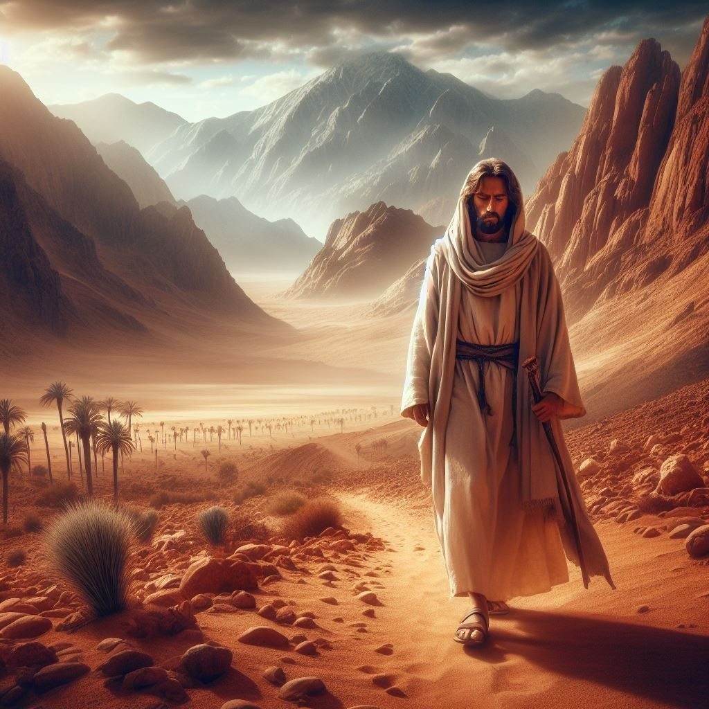
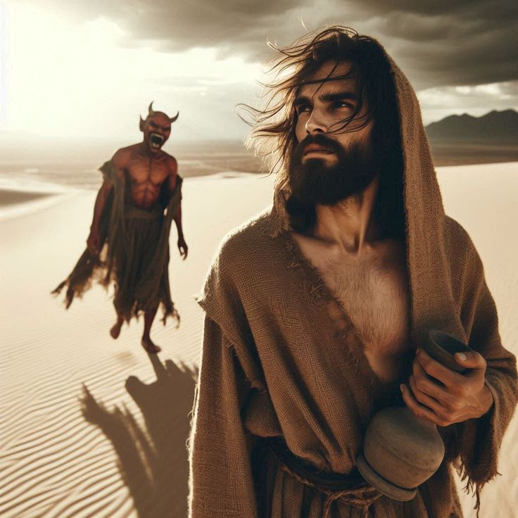
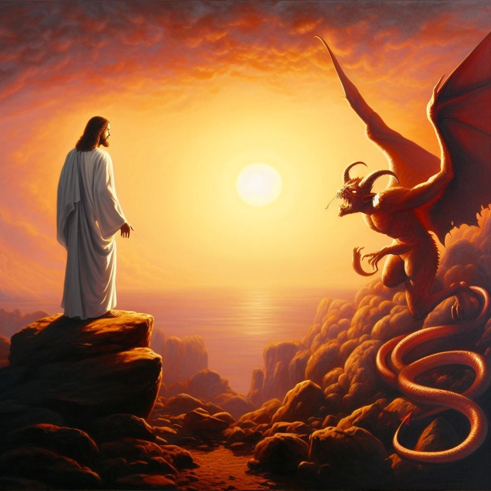
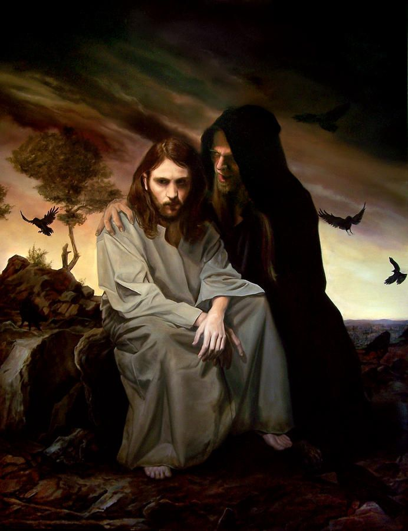
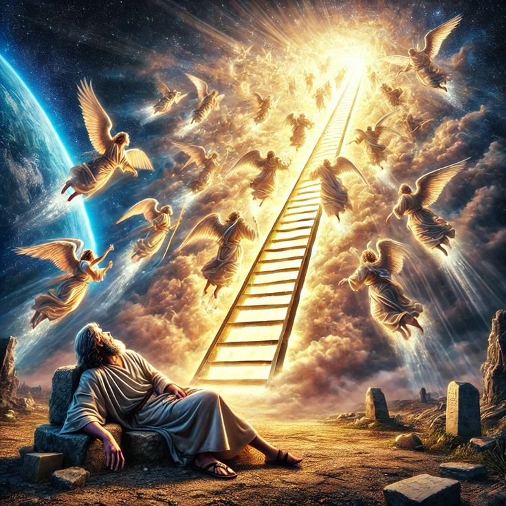

Jesus Is Tempted in the Wilderness
Jesus faced temptation but never sinned. He remained faithful to God’s will and won the battle. Because He conquered, we too can overcome. Let us follow His example — trusting God completely, even in the wilderness of life.
Jesus Is Tempted in the Wilderness

Led by the Holy Spirit
பரிசுத்த ஆவி வழிநடத்தல்
After Jesus was baptized, He was filled with the Holy Spirit. Then God led Him into the wilderness. There, Jesus fasted forty days and forty nights — with no food, only prayer and communion with His Father. He prepared His heart for the mission ahead.
இயேசு நீராட்டம் பெற்ற பிறகு, பரிசுத்த ஆவியால் நிரப்பப்பட்டார். அப்பொழுது தேவன் அவரை வனாந்தரத்துக்குக் கொண்டுபோனார். அங்கு அவர் நாற்பது நாட்களும் நாற்பது இரவுகளும் உணவு இல்லாமல் நோன்பு நோற்றார். அவர் தேவனுடன் பிரார்த்தனையில் இருந்தார்.

The First Temptation – Bread from Stones
சாத்தானின் சோதனை ஆரம்பம்
During His hunger, Satan came to tempt Him and said: “If You are the Son of God, command these stones to become bread!” But Jesus calmly replied: “It is written: Man shall not live by bread alone, but by every word that comes from the mouth of God.” (Deuteronomy 8:3) Jesus showed that God’s Word is more important than physical needs.
அந்த நேரத்தில், சாத்தான் வந்து சொன்னான்: “நீ தேவனின் மகனாக இருந்தால், இந்தக் கற்களை அப்பமாக மாற்று!” ஆனால் இயேசு அமைதியாகப் பதிலளித்தார்: “மனிதன் அப்பத்தினால் மட்டும் அல்ல, தேவனுடைய வார்த்தையினால் வாழ்கிறான்.”

The Second Temptation – Testing God
இரண்டாம் சோதனை – வானத்தின் உச்சியில்
Then the devil took Jesus to the highest point of the Temple and said: “If You are the Son of God, throw Yourself down! For it is written, ‘He will command His angels to protect You.’” But Jesus replied: “It is also written: Do not put the Lord your God to the test.” (Deuteronomy 6:16) Jesus refused to misuse God’s promises to prove His power.
பின்னர் சாத்தான் இயேசுவை ஆலயத்தின் உச்சியில் கொண்டு சென்று சொன்னான்: “நீ தேவனின் மகனாக இருந்தால், கீழே குதித்து விடு — தேவன் தூதர்களை அனுப்புவார்!” ஆனால் இயேசு சொன்னார்: “உன் தேவனாகிய ஆண்டவரைச் சோதிக்க வேண்டாம்.”

The Third Temptation – Power and Glory
மூன்றாம் சோதனை – உலக அரசுகள்
Finally, Satan took Jesus to a high mountain and showed Him all the kingdoms of the world. He said: “All this I will give You, if You bow down and worship me.” Then Jesus said firmly: “Away from me, Satan! For it is written: Worship the Lord your God, and serve Him only!” (Deuteronomy 6:13) Jesus chose obedience to God over worldly glory.
சாத்தான் இயேசுவை உயர்ந்த மலைக்கு அழைத்து, உலகத்தின் எல்லா அரசுகளையும் காட்டினான். அவன் சொன்னான்: “நீ எனக்கு வணங்கினால், இவைகள் அனைத்தையும் உனக்கு கொடுப்பேன்.” அப்போது இயேசு கடுமையாகச் சொன்னார்: “சாத்தானே, விலகி போ! உன் தேவனாகிய ஆண்டவரை மட்டுமே வணங்கி, அவருக்கே சேவை செய்!”

God’s Victory
தேவனின் வெற்றி
When Satan heard this, he left Jesus. Then angels came and ministered to Him. It was a moment of divine victory — Jesus overcame temptation through God’s Word and faith.
இதை கேட்டவுடன் சாத்தான் விலகிப் போனான். அப்பொழுது தேவதூதர்கள் வந்து இயேசுவுக்கு சேவை செய்தனர். வெற்றி இயேசுவுக்கே!
The story of Jesus in the wilderness teaches us: We must obey God and say “No” to sin. Through prayer, fasting, and faith, we gain victory.